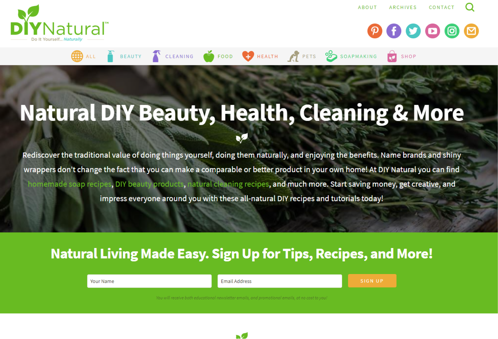
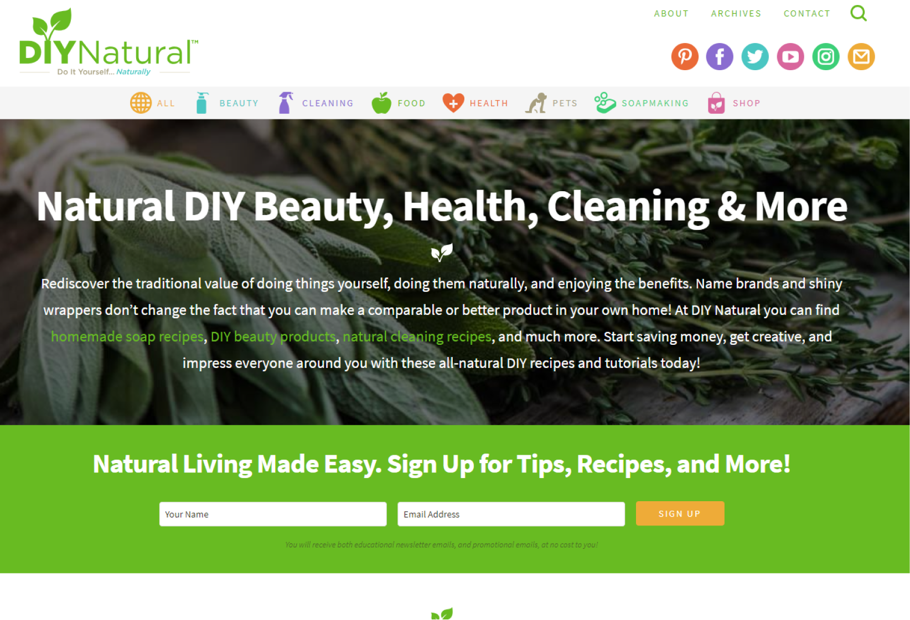
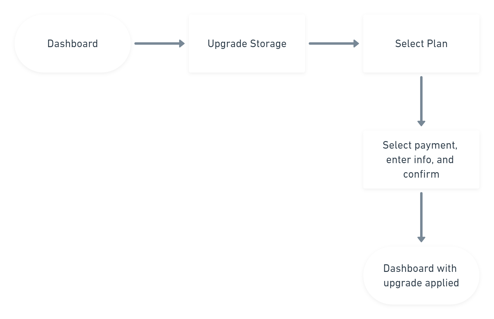
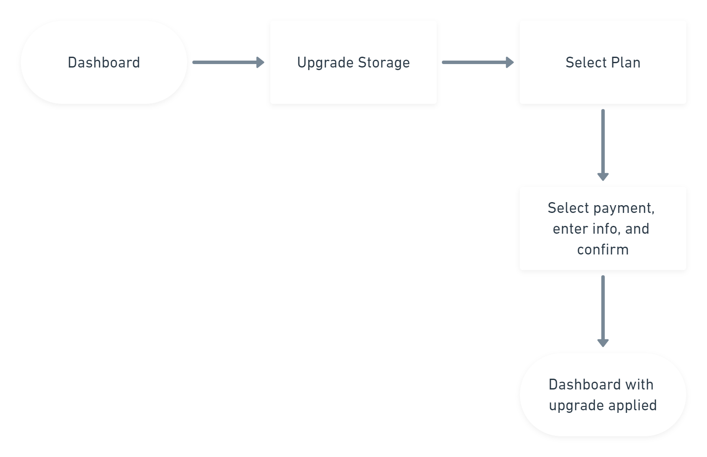
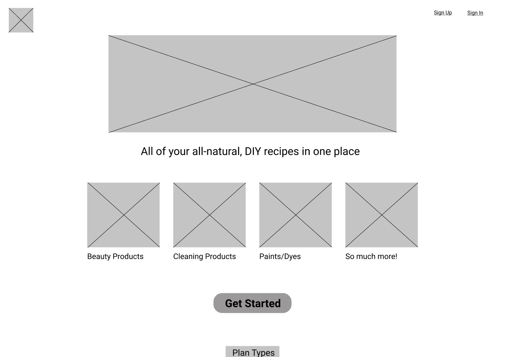
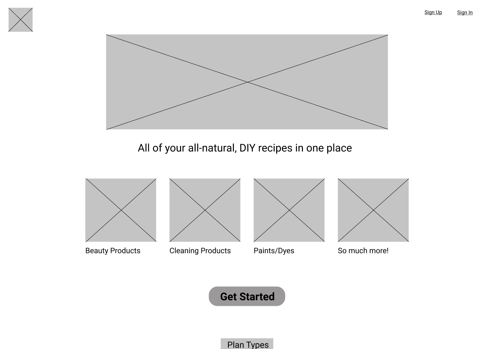
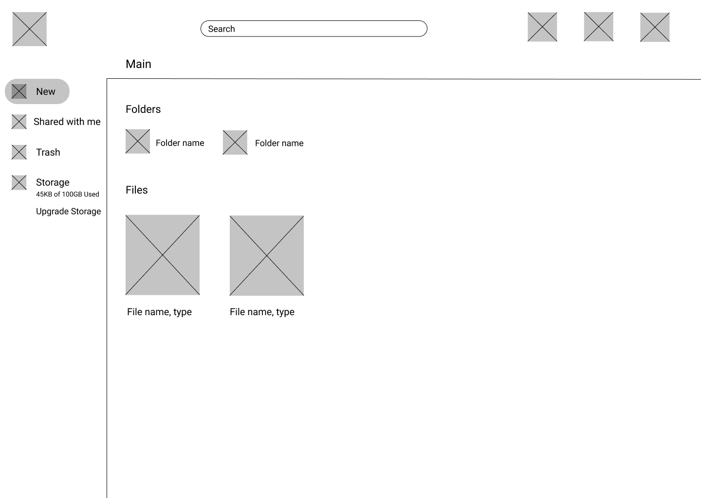
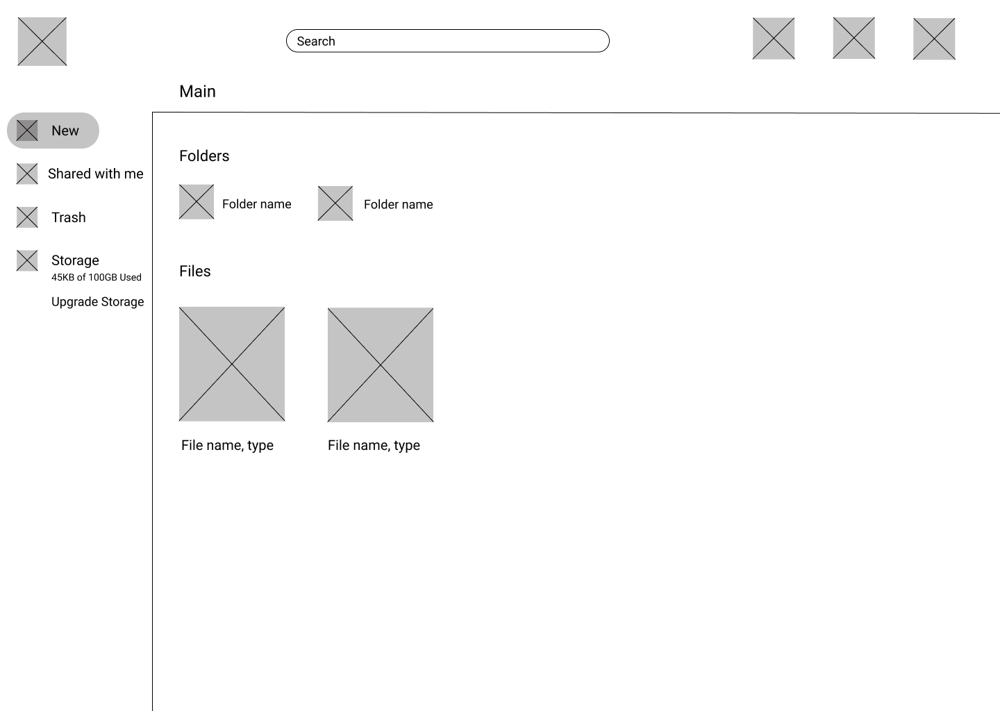

Modern Garden
A cloud storage app for users interested in various DIY, all-natural recipes for products such as beauty care or cleaning supplies.
Roles: User Research, Information Architecture, UX/UI Design, Branding, Testing
Duration: 5 weeks
Tools: Figma, InVision, Usability Hub
Process: Competitive Analysis, User Survey, User Personas, User Stories, User Flows, Wireframes, Usability Testing, Branding, Prototype, Preference Testing, Usability Testing

Modern Garden Landing Page
Summary
I conducted the research to determine what niche market to enter into for a cloud storage app and what features to include in the app. Through User Surveys, Personas, Stories, and Flows, I discovered the target audience and how they would use the app. I also undertook all of the branding, summarized it in a Style Guide, and implemented the UI via Wireframes, Hi-Fi Mockups, Prototypes, and User Testing of those deliverables.
Problem
Create a cloud storage app that allows users to
create recipes, upload videos, images, PDFs, etc., organize content via folders, and share items/folder and vice versa
AND
Figure out a target audience, device focus (web, mobile, or both), and the name and branding of the app.
Solution
Modern Garden: a cloud storage app where users can have all of their all-natural, DIY recipes in one place.
Modern Garden Dashboard
Discovery and Research
Competitive Analysis
Since cloud storage for this niche market doesn’t exist, I conducted a competitive analysis between the three most popular cloud storage services: Google Drive, Dropbox, and One Drive. By looking at their strengths and weaknesses, I determined I definitely wanted an ample free storage plan as well as good prices for the paid plans. I also determined that since the big names in cloud storage are multi-purpose and general, the best way for a new competitor to enter the market is by specializing in something specific, finding an unexploited niche.
GOOGLE DRIVE
Strengths
- First 15GB storage is free and flexibility in priced plans
- Can create/upload any type of file and connect other apps to Drive
- Can scan documents via smartphone app and store in Drive as PDFs
Weaknesses
- Slower syncing
- Can't track which files you've shared with others
- No link passwords or expiration dates for shared files
DROPBOX
Strengths
- Fastest, most reliable sync
- Integration with Office Online
- Has desktop cient for Windows, Mac, and Linux
Weaknesses
- Only 2GB of free storage
- Limited options for paid storage
- Can only grant editing permissions on folders (rather than individual files)
ONEDRIVE
Strengths
- Larger plans come with Office 365
- Integration with Office Online, Skype, and Outlook
- Strong notebook app, OneNote
Weaknesses
- Only 5GB of free storage
- Not easy to integrate with 3rd party apps
- No server-side encrytion (unless you have OneDrive Business)
Design Research
Once “all natural, DIY recipes” was the decided niche, I looked at Pinterest, but it didn’t solve the problems. It only provides links to outside sources. So I looked at websites and blogs that feature these recipes to get an idea of how the recipes are displayed, what types of people would use this, and how I could later brand the app.
 

I also looked at Cookpad, a recipe creating and
sharing app, to get an idea of what to include
for the recipe creation page. Although food
recipes are different, so it was merely for inspiration.

User Survey
I conducted a survey to determine if and how users would use this type of app and what features to include.
Survey Results More Results- 70% would use cloud storage for DIY recipes
- 75% use online storage with mobile devices
- 74% collaborate through email
Of the participants who would use cloud storage for DIY recipes:
- 100% would upload videos, images, PDFs, etc.
- 83% would share recipes with others
- 72% would create recipes online
User Personas
From the results of my survey, I came up with two personas. The users for this app include an enthusiast who wants to consolidate all the types of recipes she’s discovered in one place for herself and her family and a social media influencer who wants to create, organize, and share content in tandem with her social media channels.


Information Architecture
User Stories
In order to come up with plenty of stories to choose from, I thought of what general cloud storage users would want. After I generated some User Stories and prioritized them, I thought of what my niche users would specifically want and selected the following to focus on:
- I want to create an account
- I want to sign into my account
- I want to create a recipe
- I want to upload files
- I want to share a file/folder
- I want to upgrade my plan
User Flows
From the User Stories, I iterated how users would perform each task. I intially chose Create Account, Sign In, Upload File, and Create File, but then to help create a more complete minimal viable product I added Select Plan to the Create Account flow and added Share File and Upgrade Plan.
 

Wireframes
After doing some Content Strategy, I sketched out and digitized the wireframes for each page needed in the User Flows. Moving from the aketches to the digital versions, I added the payment plans, testimonials, and footer to the landing page to again make a more complete minimal viable product. I also wireframed out each page for each step in each flow to help me visualize the flows better and how the prototype will work.
 

Landing Page Wireframe (sketch and digital)
 

Dashboard Wireframe (sketch and digital)
Usability Test
I turned these wireframes into a clickable prototype and conducted some usability tests. My participants had the following feedback:
- Straightforward, but bland. Needs flexibility and functionality.
- Recommended a confirm password box on the sign up page
- More detail for the payment page (ie: drop down for country selection and a question mark next to CVV)
- On dashboard, include magnifying glass in search bar and meter bar to help visualize how much storage is left.
Sign Up Page (before and after)


Payment Page (before and after)

Dashboard (before and after)
Visual Design
Branding
Looking again at those DIY recipe websites, I got some inspiration for how I want this app to look. I decided on a peaceful, bright, and modern brand.
Next I created a mood board and style guide to complete the branding process.
The greens in the color pallette represent the peacefulness of nature and the pinks give it that bright pop.
The ample white space and high contrast gives it that modern feel.
I chose SeoulNamsan CB for the headers and Source Sans Pro as the complementary text. SeoulNamsan CB is sans serif and naturally bold to reflect the modern characteristic and humanist to look more flowy and natural. Source Sans Pro was chosen because it showed enough contrast to ensure proper hierarchy yet looked similar enough to promote continuity.

Logo Iterations
After a plethora of sketches of a potential logo, I took my favorites to the digital drawing board and initially decided on this:
I really liked how the M and G served as a visual representation of part of a flower, but the feedback I received was that it looked like a tooth and that a more abstract approach might work better. My second attempt looked like this:
Now that the logo was more abstract, I was told that it would be better to type out Modern Garden and have the logo be separate to avoid confusion. Here’s the final version:
Hi-fi Mockup Iterations

Dashboard Hi-fi Mockup, 1st and 2nd Iterations
For a “modern” app, my 1st attempt was a little dated looking, but a few tweaks after some feedback got things going.

Sign-up Hi-fi Mockup, 1st and 2nd Iterations
Making the images bigger and the logo smaller give the landing page more balance, expanding the colored sectional and skewing the edges makes the page more interesting, and the large thin arrows, shadowed cards for the plan types, and sharp edges all push it to that modern look. The pages with the form fields looked pretty good overall, I just removed the black borders around the field entries and gave them inner shadows which looks much sleeker.
Preference Test
I conducted some preference tests for the final logo design, and the mobile landing page. I learned that while the users give amazing feedback on your designs and can help you make better decisions, sometimes it's better to go with your gut.
While 67% prefer the iteration on the right, I actually prefer the left iteration as I like the text and image being roughly the same height, but I know it’s about what the user prefers.
Since both iterations are strong choices, I would consider using both iterations depending on where the logo is being placed in regards to the
rest of the content around in or what type of device the page is being viewed on.
See Results
79% prefer the iteration on the right. I definitely agree with these results. I think the right iteration still maximizes the viewing space while looking more aligned and crisp.
See Results
69% prefer the left iteration. One person also said that although they like how all 3 plans are visible in the one they chose, they also like the idea of graying out the less emphasized options.
So, next I’ll toy around with the idea of incorporating gray into the left iteration or just leaving it as it is. Although I really like the idea of the right iteration, I agree that having all
3 plans visible looks more clear and doesn’t give the user as much “work to do” (ie: scroll side to side to view options).
See Results
Another Usability Test
I did another round of usability tests with my mockups and made the following changes based on the results:
- Raise hierarchy of headline on landing page (ie: larger font)
- Add “... and more!” after “paints/dyes” on landing page to indicate options not limited.
- Bold “upgrade storage” on dashboard
- More options on sidebar of dashboard (recent and favorites)
Which created the final product:
Conclusion
I found that off the bat, I nailed the color scheme. There was good balance of negative space and contrast in colors. However, I didn’t have a good eye for modern design, but after some guidance from the lead designer I was able to re-imagine my ideas into a more appealing site. As a junior designer with only one project under my belt thus far, I had plenty of doubts in my ability in general. There’s a reason the design process exists though. It really helps you walk through every detail and make informed design decisions. Constant feedback and iterations is also key. As I keep practicing I’ll only get better and faster. With more time I probably would’ve included more detail and functionality. I learned a lot about borders, shadows, iconography, and how they’re all incorporated to portray the branding accurately. I’ll use this to make my first iterations a bit more solid and fleshed out so that subsequent iterations can be even more detailed and refined.